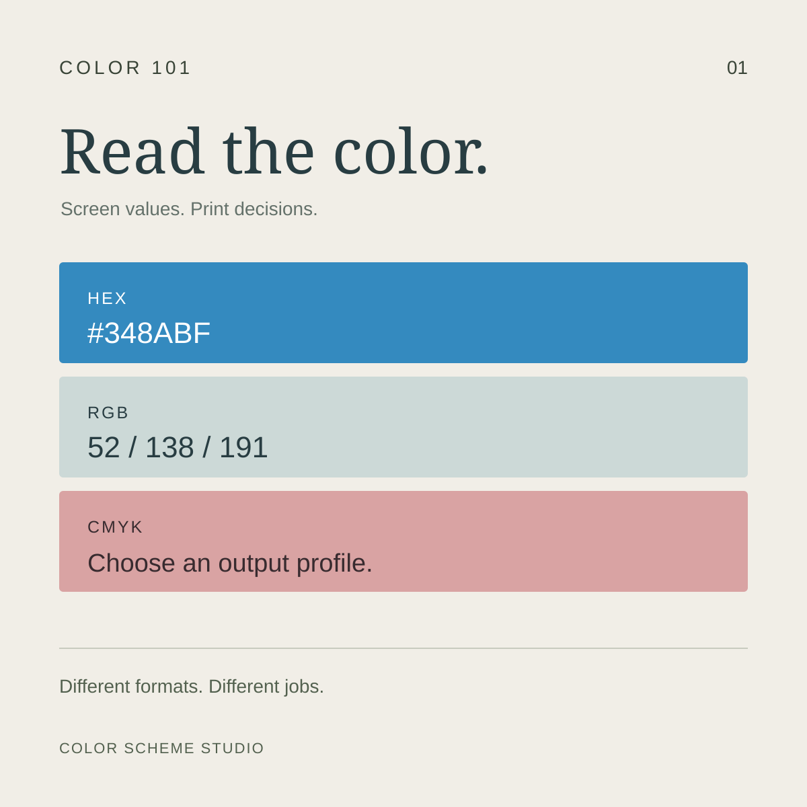
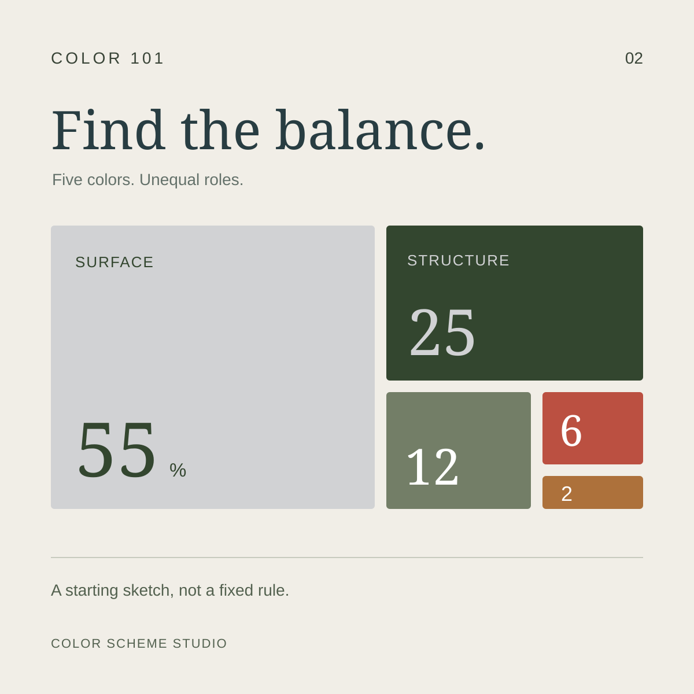
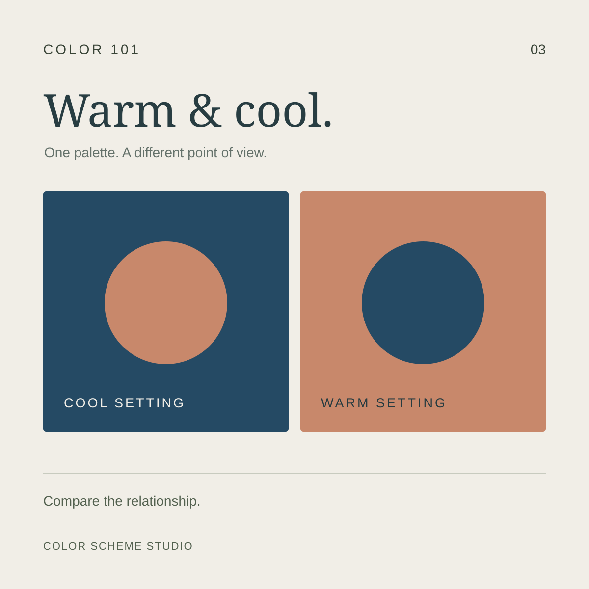
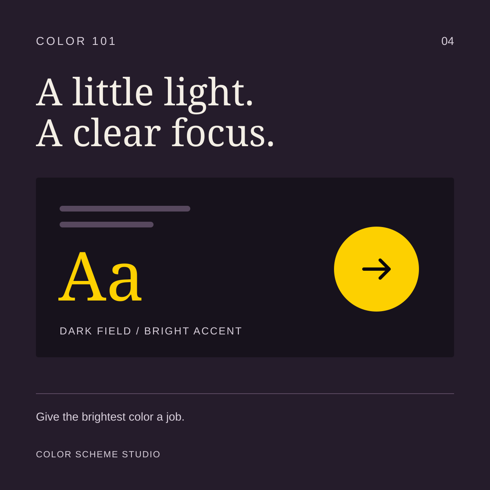

Color 101 · Practical color guides
Understand the colors you choose.
Simple explanations, useful examples, and small tools for your next design.

01 / Color fundamentals
HEX, RGB & CMYK: what they mean and when to use them
One color, different ways to describe it. Learn which values belong in your digital and print workflow.
Read the guide →
02 / Color in practice
How to balance a five-color palette
Five equal swatches do not need five equal jobs. Turn a palette into a composition with a clear focal point.
Read the guide →
03 / Color relationships
How to combine warm and cool colors
Use a snowy forest palette to decide where warm and cool colors belong. Compare three layouts and keep color temperature separate from readability.
Read the guide →
04 / Light and contrast
How to use bright accents on dark backgrounds
Give a dark palette a clear focal point without sacrificing readable text. Test real gold, copper, plum, and ink pairs from an amber-lit photograph.
Read the guide →